pacman::p_load(corrplot, ggpubr, sf, sfdep, GWmodel, tmap,
tidyverse, gtsummary, performance, see,
RColorBrewer, knitr, lmtest)Hands-on Exercise 7
Calibrating Hedonic Pricing Model for Private Highrise Property with GWR Method
1,436 condominium resale transactions in Singapore, 2015 MP14_SUBZONE_WEB_PL shapefile, Condo_resale_2015.csv sf sfdep GWmodel tmap performance gtsummary corrplot tidyverse
1 Overview
This exercise follows chapter 13 of the book. It builds a hedonic pricing model for condominium resale prices in 2015. A hedonic model explains a price by the features of what is sold. Here the features are structural, such as floor area and age, and locational, such as the distance to the CBD, an MRT station or a park.
I first fit an ordinary least squares (OLS) model, which gives one coefficient per variable for the whole island. Then I fit a geographically weighted regression (GWR). GWR fits a separate regression at every condo, using nearby sales with more weight on closer ones. So each variable gets its own coefficient at each location, and I can map how the effect of a feature changes across Singapore.
2 Loading the Packages
GWmodel is the new package. It finds the bandwidth and calibrates the GWR models. performance and see run and plot the regression diagnostics, and gtsummary formats the regression table. sfdep builds the distance weights for the Moran’s I test. sf, tmap, corrplot, ggpubr, RColorBrewer and tidyverse do the same jobs as before. The book also loads olsrr, but the current version of the chapter uses performance for every diagnostic, so I left it out. I add knitr for tables and lmtest for one extra test in the last section.
3 Geospatial Data Wrangling
3.1 Importing the Geospatial Data
st_read() of sf reads the URA Master Plan 2014 subzone boundaries.
mpsz <- st_read(dsn = "data/geospatial",
layer = "MP14_SUBZONE_WEB_PL")Reading layer `MP14_SUBZONE_WEB_PL' from data source
`/Users/czxtom/Documents/Programming/GAA/ISSS626-GAA/Hands-on_Ex/Hands-on_Ex07/data/geospatial'
using driver `ESRI Shapefile'
Simple feature collection with 323 features and 15 fields
Geometry type: MULTIPOLYGON
Dimension: XY
Bounding box: xmin: 2667.538 ymin: 15748.72 xmax: 56396.44 ymax: 50256.33
Projected CRS: SVY213.2 Updating the CRS Information
The shapefile is in SVY21, but it has no EPSG code attached. st_transform() sets it to EPSG 3414, and st_crs() checks the result.
mpsz_svy21 <- st_transform(mpsz, 3414)
st_crs(mpsz_svy21)$epsg[1] 3414st_bbox(mpsz_svy21) xmin ymin xmax ymax
2667.538 15748.721 56396.440 50256.334 The EPSG code is now 3414, and the extent is in metres.
4 Aspatial Data Wrangling
4.1 Importing the Aspatial Data
read_csv() of readr reads the resale records.
condo_resale <- read_csv("data/aspatial/Condo_resale_2015.csv")
glimpse(condo_resale)Rows: 1,436
Columns: 23
$ LATITUDE <dbl> 1.287145, 1.328698, 1.313727, 1.308563, 1.321437,…
$ LONGITUDE <dbl> 103.7802, 103.8123, 103.7971, 103.8247, 103.9505,…
$ POSTCODE <dbl> 118635, 288420, 267833, 258380, 467169, 466472, 3…
$ SELLING_PRICE <dbl> 3000000, 3880000, 3325000, 4250000, 1400000, 1320…
$ AREA_SQM <dbl> 309, 290, 248, 127, 145, 139, 218, 141, 165, 168,…
$ AGE <dbl> 30, 32, 33, 7, 28, 22, 24, 24, 27, 31, 17, 22, 6,…
$ PROX_CBD <dbl> 7.941259, 6.609797, 6.898000, 4.038861, 11.783402…
$ PROX_CHILDCARE <dbl> 0.16597932, 0.28027246, 0.42922669, 0.39473543, 0…
$ PROX_ELDERLYCARE <dbl> 2.5198118, 1.9333338, 0.5021395, 1.9910316, 1.121…
$ PROX_URA_GROWTH_AREA <dbl> 6.618741, 7.505109, 6.463887, 4.906512, 6.410632,…
$ PROX_HAWKER_MARKET <dbl> 1.76542207, 0.54507614, 0.37789301, 1.68259969, 0…
$ PROX_KINDERGARTEN <dbl> 0.05835552, 0.61592412, 0.14120309, 0.38200076, 0…
$ PROX_MRT <dbl> 0.5607188, 0.6584461, 0.3053433, 0.6910183, 0.528…
$ PROX_PARK <dbl> 1.1710446, 0.1992269, 0.2779886, 0.9832843, 0.116…
$ PROX_PRIMARY_SCH <dbl> 1.6340256, 0.9747834, 1.4715016, 1.4546324, 0.709…
$ PROX_TOP_PRIMARY_SCH <dbl> 3.3273195, 0.9747834, 1.4715016, 2.3006394, 0.709…
$ PROX_SHOPPING_MALL <dbl> 2.2102717, 2.9374279, 1.2256850, 0.3525671, 1.307…
$ PROX_SUPERMARKET <dbl> 0.9103958, 0.5900617, 0.4135583, 0.4162219, 0.581…
$ PROX_BUS_STOP <dbl> 0.10336166, 0.28673408, 0.28504777, 0.29872340, 0…
$ NO_Of_UNITS <dbl> 18, 20, 27, 30, 30, 31, 32, 32, 32, 32, 34, 34, 3…
$ FAMILY_FRIENDLY <dbl> 0, 0, 0, 0, 0, 1, 1, 0, 1, 1, 0, 0, 0, 0, 0, 0, 0…
$ FREEHOLD <dbl> 1, 1, 1, 1, 1, 1, 1, 1, 1, 0, 1, 1, 1, 1, 1, 1, 1…
$ LEASEHOLD_99YR <dbl> 0, 0, 0, 0, 0, 0, 0, 0, 0, 0, 0, 0, 0, 0, 0, 0, 0…There are 1436 sales and 23 columns. LONGITUDE and LATITUDE are in decimal degrees, so the coordinates are in WGS 84.
summary(condo_resale$SELLING_PRICE) Min. 1st Qu. Median Mean 3rd Qu. Max.
540000 1100000 1383222 1751211 1950000 18000000 4.2 Converting to an sf Object
st_as_sf() turns the table into points using the WGS 84 coordinates (EPSG 4326), and st_transform() projects them to SVY21 (EPSG 3414) to match the subzones.
condo_resale.sf <- st_as_sf(condo_resale,
coords = c("LONGITUDE", "LATITUDE"),
crs = 4326) %>%
st_transform(crs = 3414)
head(condo_resale.sf, 3)Simple feature collection with 3 features and 21 fields
Geometry type: POINT
Dimension: XY
Bounding box: xmin: 22085.12 ymin: 29951.54 xmax: 25656.84 ymax: 34546.2
Projected CRS: SVY21 / Singapore TM
# A tibble: 3 × 22
POSTCODE SELLING_PRICE AREA_SQM AGE PROX_CBD PROX_CHILDCARE PROX_ELDERLYCARE
<dbl> <dbl> <dbl> <dbl> <dbl> <dbl> <dbl>
1 118635 3000000 309 30 7.94 0.166 2.52
2 288420 3880000 290 32 6.61 0.280 1.93
3 267833 3325000 248 33 6.90 0.429 0.502
# ℹ 15 more variables: PROX_URA_GROWTH_AREA <dbl>, PROX_HAWKER_MARKET <dbl>,
# PROX_KINDERGARTEN <dbl>, PROX_MRT <dbl>, PROX_PARK <dbl>,
# PROX_PRIMARY_SCH <dbl>, PROX_TOP_PRIMARY_SCH <dbl>,
# PROX_SHOPPING_MALL <dbl>, PROX_SUPERMARKET <dbl>, PROX_BUS_STOP <dbl>,
# NO_Of_UNITS <dbl>, FAMILY_FRIENDLY <dbl>, FREEHOLD <dbl>,
# LEASEHOLD_99YR <dbl>, geometry <POINT [m]>
NoteLearning diary
69 points share their exact location with another sale. These are different units sold in the same block, since the data gives one coordinate per postcode. GWR handles this fine, but it means some neighbourhoods are weighted by several sales from one building.
5 Exploratory Data Analysis
5.1 Distribution of the Selling Price
mutate() adds a log of the selling price, and geom_histogram() of ggplot2 draws both versions.
condo_resale.sf <- condo_resale.sf %>%
mutate(LOG_SELLING_PRICE = log(SELLING_PRICE))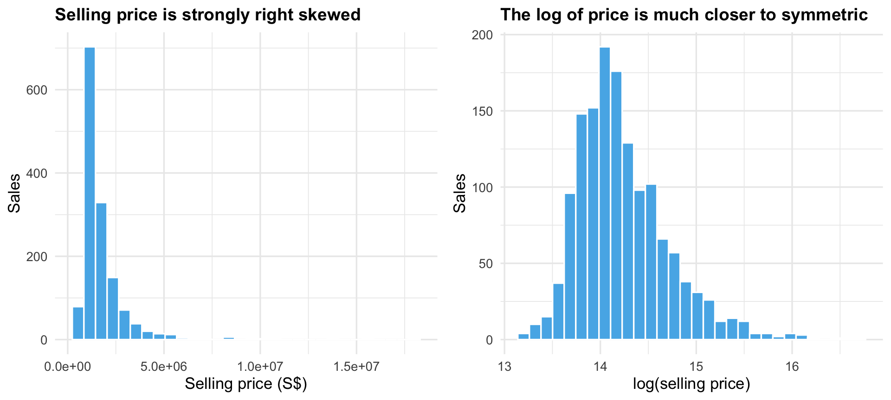
price_hist <- function(var, title, xlab) {
ggplot(condo_resale.sf, aes(x = .data[[var]])) +
geom_histogram(bins = 30, fill = "#56B4E9", colour = "white") +
labs(x = xlab, y = "Sales", title = title) +
theme_minimal(base_size = 13) +
theme(plot.title = element_text(size = 14, face = "bold"))
}
ggarrange(price_hist("SELLING_PRICE", "Selling price is strongly right skewed",
"Selling price (S$)"),
price_hist("LOG_SELLING_PRICE", "The log of price is much closer to symmetric",
"log(selling price)"),
ncol = 2)The middle half of the units sold for between S$1.1 million and S$1.95 million, but a few sold for over S$10 million, up to S$18 million. These stretch the right tail. The log brings the skewness down from 5.03 to 1.09. The book creates the log variable but never uses it in a model. I come back to it in Log Price Instead of Price.
5.2 Distribution of the Independent Variables
The book builds twelve histograms and joins them with ggarrange(). pivot_longer() and facet_wrap() give the same panels from one call.
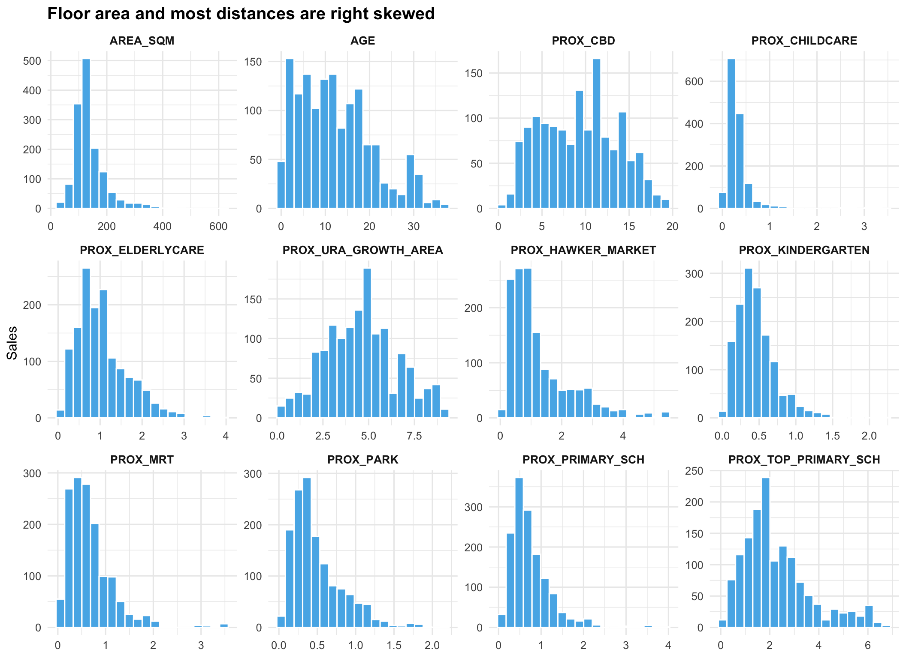
condo_resale.sf %>%
st_drop_geometry() %>%
select(AREA_SQM, AGE, PROX_CBD, PROX_CHILDCARE, PROX_ELDERLYCARE,
PROX_URA_GROWTH_AREA, PROX_HAWKER_MARKET, PROX_KINDERGARTEN,
PROX_MRT, PROX_PARK, PROX_PRIMARY_SCH, PROX_TOP_PRIMARY_SCH) %>%
pivot_longer(everything(), names_to = "variable", values_to = "value") %>%
mutate(variable = fct_inorder(variable)) %>%
ggplot(aes(x = value)) +
geom_histogram(bins = 20, fill = "#56B4E9", colour = "white") +
facet_wrap(~ variable, ncol = 4, scales = "free") +
labs(x = NULL, y = "Sales",
title = "Floor area and most distances are right skewed") +
theme_minimal(base_size = 12) +
theme(plot.title = element_text(size = 15, face = "bold"),
strip.text = element_text(size = 10, face = "bold"))The distances are in kilometres. Most are right skewed, with many condos close to each facility and a few far away. PROX_CBD is the exception, with a wide spread from the city centre out to the edges of the island.
5.3 Statistical Point Map
tm_shape() and tm_dots() of tmap map the selling price of each sale over the subzone boundaries, using quantile classes.
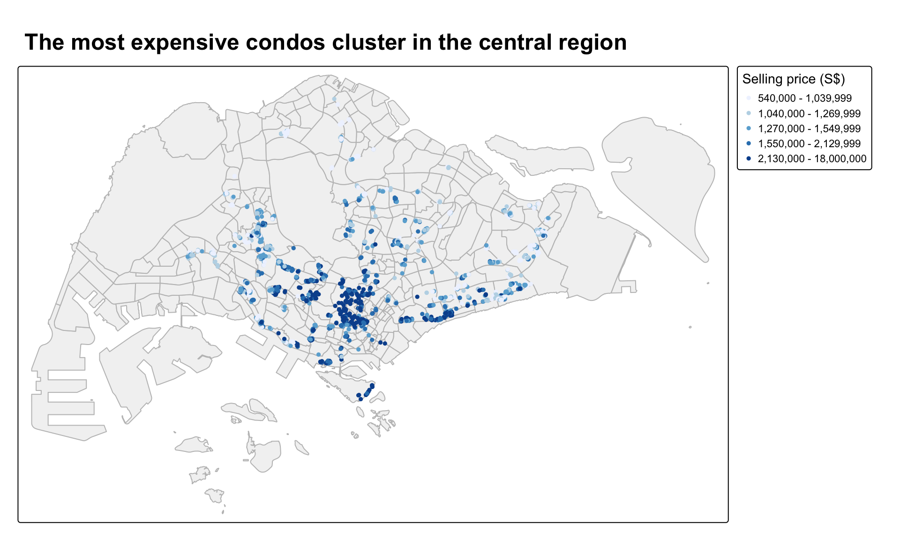
tmap_mode("plot")
tm_shape(mpsz_svy21) +
tm_polygons(fill = "grey95", col = "grey75") +
tm_shape(condo_resale.sf) +
tm_dots(fill = "SELLING_PRICE",
size = 0.25,
fill.scale = tm_scale_intervals(style = "quantile",
values = "brewer.blues"),
fill.legend = tm_legend(title = "Selling price (S$)",
position = tm_pos_out("right", "center"))) +
tm_title("The most expensive condos cluster in the central region",
size = 1.5, fontface = "bold")The darkest points, the top fifth of prices, are packed into the central area near the CBD. The cheaper sales are spread across the east, north and west. So price already looks spatially clustered before any model is fitted.
CautionWhere I differ from the book
The book draws this map and the later point maps in tmap_mode("view"), as interactive web maps. I use static plot mode with the legend outside the map. A static map shows in the rendered page without loading web map tiles, and it keeps the same look as my other exercises. The book’s view-mode code for the local R² and coefficient maps also uses tmap v3 arguments such as col and border.col, which I rewrote in v4 syntax.
6 Hedonic Pricing Modelling with OLS
6.1 Simple Linear Regression
lm() of base R fits selling price on floor area alone.
condo.slr <- lm(formula = SELLING_PRICE ~ AREA_SQM,
data = condo_resale.sf)
summary(condo.slr)
Call:
lm(formula = SELLING_PRICE ~ AREA_SQM, data = condo_resale.sf)
Residuals:
Min 1Q Median 3Q Max
-3695815 -391764 -87517 258900 13503875
Coefficients:
Estimate Std. Error t value Pr(>|t|)
(Intercept) -258121.1 63517.2 -4.064 5.09e-05 ***
AREA_SQM 14719.0 428.1 34.381 < 2e-16 ***
---
Signif. codes: 0 '***' 0.001 '**' 0.01 '*' 0.05 '.' 0.1 ' ' 1
Residual standard error: 942700 on 1434 degrees of freedom
Multiple R-squared: 0.4518, Adjusted R-squared: 0.4515
F-statistic: 1182 on 1 and 1434 DF, p-value: < 2.2e-16The fitted line is price = -258,121.1 + 14,719 × area. Each extra square metre adds about S$14,719. The R² is 0.4518, so floor area alone explains about 45 percent of the variation in price. Both coefficients have p-values far below 0.001.
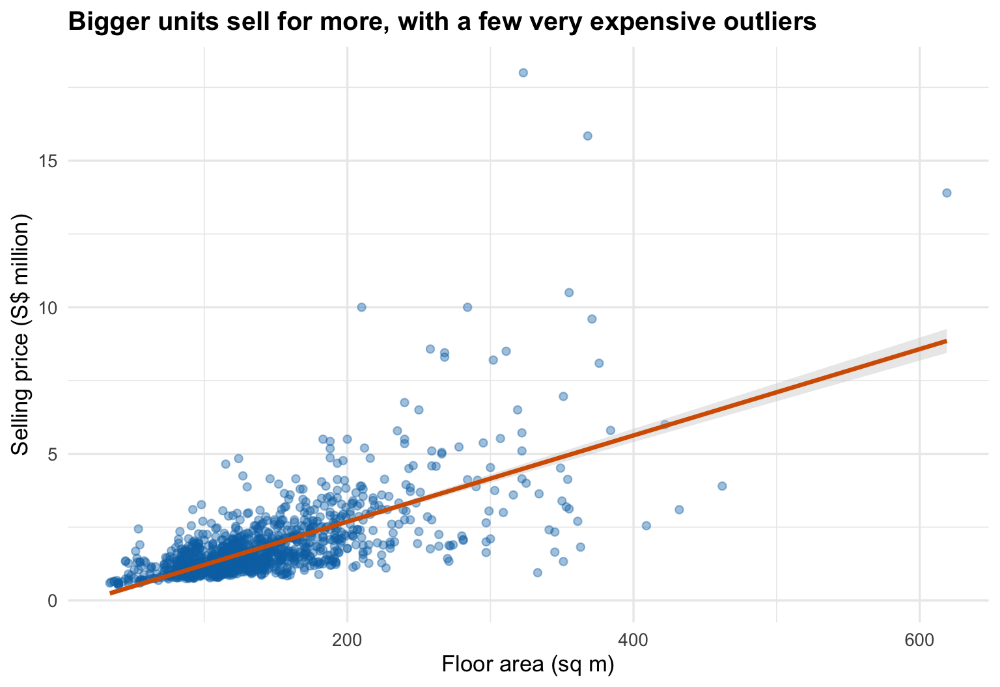
ggplot(condo_resale.sf, aes(x = AREA_SQM, y = SELLING_PRICE / 1e6)) +
geom_point(colour = "#0072B2", alpha = 0.4) +
geom_smooth(method = lm, colour = "#D55E00", fill = "grey80") +
labs(x = "Floor area (sq m)", y = "Selling price (S$ million)",
title = "Bigger units sell for more, with a few very expensive outliers") +
theme_minimal(base_size = 13) +
theme(plot.title = element_text(size = 15, face = "bold"))The points fan out as area grows. Large units vary much more in price than small ones, and a handful of sales sit far above the line.
6.2 Checking the Independent Variables for Multicollinearity
corrplot() of corrplot shows the correlations between the 19 candidate independent variables. AOE ordering puts variables that behave alike next to each other.
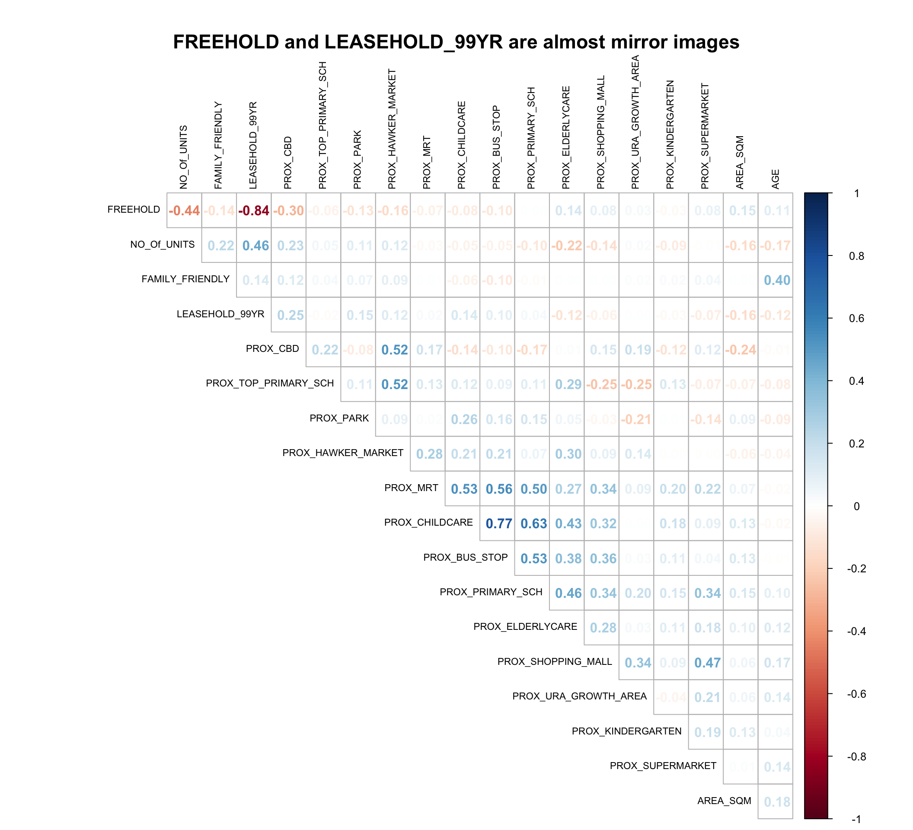
corrplot(cor(select(condo_resale, AREA_SQM:LEASEHOLD_99YR)),
diag = FALSE,
order = "AOE",
tl.pos = "td",
tl.cex = 0.7,
tl.col = "black",
method = "number",
type = "upper",
mar = c(0, 0, 3, 0))
mtext("FREEHOLD and LEASEHOLD_99YR are almost mirror images", side = 3,
line = 1, cex = 1.4, font = 2)FREEHOLD and LEASEHOLD_99YR have a correlation of -0.84. Most condos are one or the other, so the two columns carry nearly the same information. Like the book, I keep FREEHOLD and leave LEASEHOLD_99YR out.
CautionWhere I differ from the book
The book selects the columns with condo_resale[, 5:23]. I select them by name with AREA_SQM:LEASEHOLD_99YR, so the code still works if the csv gains a column.
6.3 Multiple Linear Regression
lm() fits price on all 18 remaining variables.
condo.mlr <- lm(
formula = SELLING_PRICE ~ AREA_SQM + AGE +
PROX_CBD + PROX_CHILDCARE + PROX_ELDERLYCARE +
PROX_URA_GROWTH_AREA + PROX_HAWKER_MARKET +
PROX_KINDERGARTEN + PROX_MRT + PROX_PARK +
PROX_PRIMARY_SCH + PROX_TOP_PRIMARY_SCH +
PROX_SHOPPING_MALL + PROX_SUPERMARKET +
PROX_BUS_STOP + NO_Of_UNITS +
FAMILY_FRIENDLY + FREEHOLD,
data = condo_resale.sf)
summary(condo.mlr)
Call:
lm(formula = SELLING_PRICE ~ AREA_SQM + AGE + PROX_CBD + PROX_CHILDCARE +
PROX_ELDERLYCARE + PROX_URA_GROWTH_AREA + PROX_HAWKER_MARKET +
PROX_KINDERGARTEN + PROX_MRT + PROX_PARK + PROX_PRIMARY_SCH +
PROX_TOP_PRIMARY_SCH + PROX_SHOPPING_MALL + PROX_SUPERMARKET +
PROX_BUS_STOP + NO_Of_UNITS + FAMILY_FRIENDLY + FREEHOLD,
data = condo_resale.sf)
Residuals:
Min 1Q Median 3Q Max
-3475964 -293923 -23069 241043 12260381
Coefficients:
Estimate Std. Error t value Pr(>|t|)
(Intercept) 481728.40 121441.01 3.967 7.65e-05 ***
AREA_SQM 12708.32 369.59 34.385 < 2e-16 ***
AGE -24440.82 2763.16 -8.845 < 2e-16 ***
PROX_CBD -78669.78 6768.97 -11.622 < 2e-16 ***
PROX_CHILDCARE -351617.91 109467.25 -3.212 0.00135 **
PROX_ELDERLYCARE 171029.42 42110.51 4.061 5.14e-05 ***
PROX_URA_GROWTH_AREA 38474.53 12523.57 3.072 0.00217 **
PROX_HAWKER_MARKET 23746.10 29299.76 0.810 0.41782
PROX_KINDERGARTEN 147468.99 82668.87 1.784 0.07466 .
PROX_MRT -314599.68 57947.44 -5.429 6.66e-08 ***
PROX_PARK 563280.50 66551.68 8.464 < 2e-16 ***
PROX_PRIMARY_SCH 180186.08 65237.95 2.762 0.00582 **
PROX_TOP_PRIMARY_SCH 2280.04 20410.43 0.112 0.91107
PROX_SHOPPING_MALL -206604.06 42840.60 -4.823 1.57e-06 ***
PROX_SUPERMARKET -44991.80 77082.64 -0.584 0.55953
PROX_BUS_STOP 683121.35 138353.28 4.938 8.85e-07 ***
NO_Of_UNITS -231.18 89.03 -2.597 0.00951 **
FAMILY_FRIENDLY 140340.77 47020.55 2.985 0.00289 **
FREEHOLD 359913.01 49220.22 7.312 4.38e-13 ***
---
Signif. codes: 0 '***' 0.001 '**' 0.01 '*' 0.05 '.' 0.1 ' ' 1
Residual standard error: 755800 on 1417 degrees of freedom
Multiple R-squared: 0.6518, Adjusted R-squared: 0.6474
F-statistic: 147.4 on 18 and 1417 DF, p-value: < 2.2e-16The R² rises to 0.6518 and the adjusted R² to 0.6474. Four variables are not significant at 0.05, PROX_HAWKER_MARKET, PROX_KINDERGARTEN, PROX_TOP_PRIMARY_SCH and PROX_SUPERMARKET.
6.4 Revising the Model
The revised model drops those four variables.
condo.mlr1 <- lm(
formula = SELLING_PRICE ~ AREA_SQM + AGE +
PROX_CBD + PROX_CHILDCARE + PROX_MRT +
PROX_ELDERLYCARE + PROX_URA_GROWTH_AREA +
PROX_PARK + PROX_PRIMARY_SCH +
PROX_SHOPPING_MALL + PROX_BUS_STOP +
NO_Of_UNITS + FAMILY_FRIENDLY + FREEHOLD,
data = condo_resale.sf)tbl_regression() of gtsummary formats the coefficients, and add_glance_source_note() adds the model statistics underneath.
tbl_regression(condo.mlr1,
intercept = TRUE) %>%
add_glance_source_note(
label = list(sigma ~ "\U03C3"),
include = c(r.squared, adj.r.squared,
AIC, statistic,
p.value, sigma))| Characteristic | Beta | 95% CI | p-value |
|---|---|---|---|
| (Intercept) | 527,633 | 315,417, 739,849 | <0.001 |
| AREA_SQM | 12,778 | 12,057, 13,498 | <0.001 |
| AGE | -24,688 | -30,092, -19,284 | <0.001 |
| PROX_CBD | -77,131 | -88,436, -65,826 | <0.001 |
| PROX_CHILDCARE | -318,473 | -530,250, -106,696 | 0.003 |
| PROX_MRT | -294,745 | -406,394, -183,096 | <0.001 |
| PROX_ELDERLYCARE | 185,576 | 107,303, 263,849 | <0.001 |
| PROX_URA_GROWTH_AREA | 39,163 | 16,105, 62,222 | <0.001 |
| PROX_PARK | 570,505 | 442,004, 699,006 | <0.001 |
| PROX_PRIMARY_SCH | 159,856 | 41,698, 278,014 | 0.008 |
| PROX_SHOPPING_MALL | -220,947 | -292,668, -149,226 | <0.001 |
| PROX_BUS_STOP | 682,482 | 418,616, 946,348 | <0.001 |
| NO_Of_UNITS | -245 | -418, -73 | 0.005 |
| FAMILY_FRIENDLY | 146,308 | 54,321, 238,295 | 0.002 |
| FREEHOLD | 350,600 | 255,448, 445,752 | <0.001 |
| Abbreviation: CI = Confidence Interval | |||
| R² = 0.651; Adjusted R² = 0.647; AIC = 42,967; Statistic = 189; p-value = <0.001; σ = 755,957 | |||
All 14 variables are now significant at 0.05, and the adjusted R² is 0.6472, almost unchanged. Dropping the four weak variables cost almost no fit.
NoteLearning diary
Some signs look odd at first. PROX_CHILDCARE, PROX_MRT and PROX_SHOPPING_MALL are negative, which makes sense, since being further from these lowers the price. But PROX_PARK, PROX_ELDERLYCARE and PROX_BUS_STOP are positive, so being further from a park or a bus stop goes with a higher price. I think these pick up other things. Expensive condos in the central area are often not right next to a big park, and bus stops are densest in the HDB towns. A global model cannot separate these, which is one reason to try GWR.
6.5 Regression Diagnostics
6.5.1 Multicollinearity
check_collinearity() of performance computes the variance inflation factor (VIF) for each variable.
mlr.vif <- check_collinearity(condo.mlr1)
mlr.vif# Check for Multicollinearity
Low Correlation
Term VIF VIF 95% CI adj. VIF Tolerance Tolerance 95% CI
AREA_SQM 1.15 [1.09, 1.23] 1.07 0.87 [0.81, 0.92]
AGE 1.41 [1.33, 1.52] 1.19 0.71 [0.66, 0.75]
PROX_CBD 1.57 [1.47, 1.69] 1.25 0.64 [0.59, 0.68]
PROX_CHILDCARE 3.26 [3.00, 3.56] 1.81 0.31 [0.28, 0.33]
PROX_MRT 1.91 [1.78, 2.07] 1.38 0.52 [0.48, 0.56]
PROX_ELDERLYCARE 1.52 [1.42, 1.63] 1.23 0.66 [0.61, 0.70]
PROX_URA_GROWTH_AREA 1.33 [1.26, 1.43] 1.15 0.75 [0.70, 0.80]
PROX_PARK 1.21 [1.15, 1.29] 1.10 0.83 [0.77, 0.87]
PROX_PRIMARY_SCH 2.21 [2.05, 2.40] 1.49 0.45 [0.42, 0.49]
PROX_SHOPPING_MALL 1.48 [1.39, 1.60] 1.22 0.67 [0.63, 0.72]
PROX_BUS_STOP 2.85 [2.62, 3.10] 1.69 0.35 [0.32, 0.38]
NO_Of_UNITS 1.45 [1.36, 1.56] 1.20 0.69 [0.64, 0.73]
FAMILY_FRIENDLY 1.38 [1.30, 1.48] 1.17 0.72 [0.67, 0.77]
FREEHOLD 1.44 [1.36, 1.55] 1.20 0.69 [0.65, 0.74]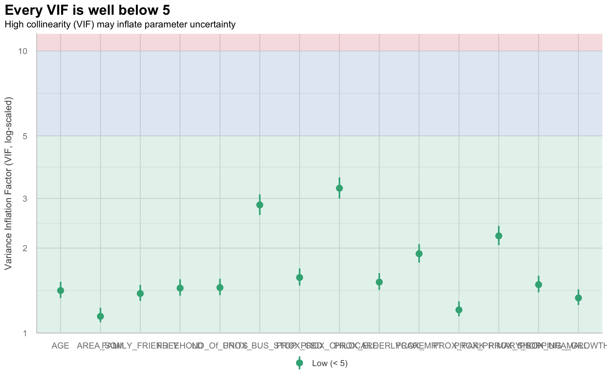
plot(mlr.vif) +
labs(title = "Every VIF is well below 5") +
theme(plot.title = element_text(size = 15, face = "bold"))The highest VIF is 3.26, for PROX_CHILDCARE. All are far below the usual cut-off of 10, so multicollinearity is not a problem.
6.5.2 Linearity
check_model() with check = "linearity" plots the residuals against the fitted values.
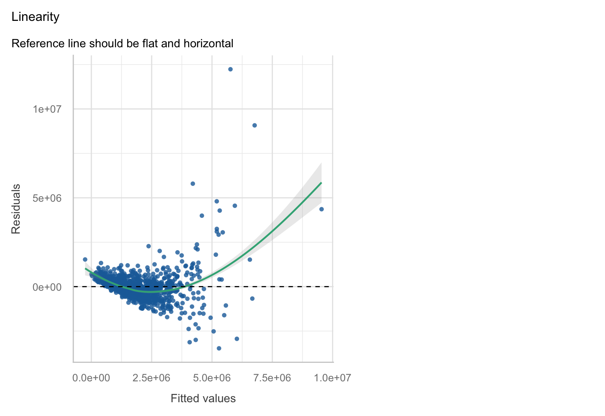
check_model(condo.mlr1, check = "linearity")Most residuals scatter around zero and the reference line is roughly flat, so the linear form is acceptable. The spread widens for the higher fitted prices, which is a sign of unequal variance.
6.5.3 Normality
check_normality() runs a Shapiro-Wilk test on the standardised residuals.
check_normality(condo.mlr1)Warning: Non-normality of residuals detected (p < .001).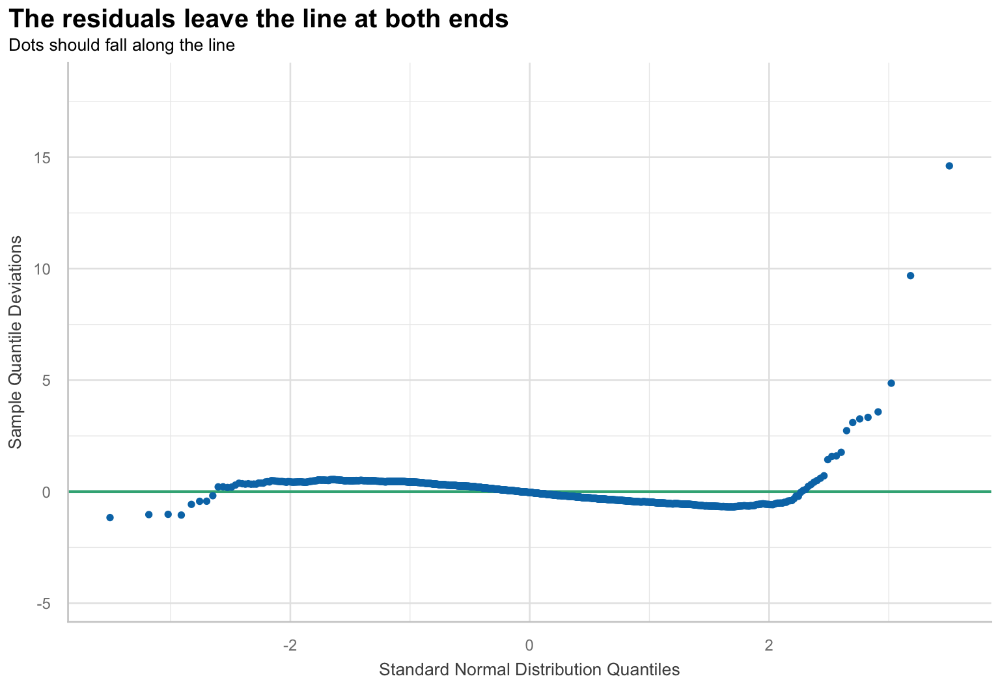
plot(check_normality(condo.mlr1), type = "qq") +
labs(title = "The residuals leave the line at both ends") +
theme(plot.title = element_text(size = 15, face = "bold"))
ImportantCheck that caught something
The book says the Q-Q plot shows most points along the line and that the residuals resemble a normal distribution. The test disagrees strongly. The Shapiro-Wilk W is 0.686, and the skewness of the residuals is 5.14. A normal distribution has W close to 1 and skewness 0. The points do follow the line in the middle, but the top end bends far away because of the very expensive sales. This matters because the p-values in the table assume normal errors. The book’s note that formal tests reject too easily in large samples is true, but here the plot shows the same problem. I test a log-price model in Log Price Instead of Price.
The book also draws the same check through check_model(). It shows the same pattern as the Q-Q plot above, so I leave it out.
6.5.4 Spatial Autocorrelation in the Residuals
The model uses located data, so the residuals may be spatially autocorrelated. If nearby condos have similar residuals, the model is missing something about location. cbind() adds the residuals to the sf data frame.
condo_resale.sf <- cbind(condo_resale.sf,
condo.mlr1$residuals) %>%
rename(MLR_RES = condo.mlr1.residuals)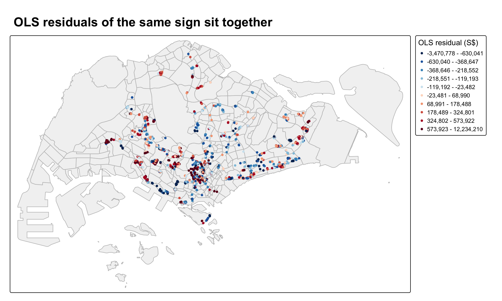
tm_shape(mpsz_svy21) +
tm_polygons(fill = "grey95", col = "grey75") +
tm_shape(condo_resale.sf) +
tm_dots(fill = "MLR_RES",
size = 0.25,
fill.scale = tm_scale_intervals(n = 10,
style = "quantile",
values = "-brewer.rd_bu",
midpoint = NA),
fill.legend = tm_legend(title = "OLS residual (S$)",
position = tm_pos_out("right", "center"))) +
tm_title("OLS residuals of the same sign sit together",
size = 1.5, fontface = "bold")Red points are under-predicted, where the model guesses too low, and blue points are over-predicted. Both colours come in groups rather than being mixed at random.
To test this, st_dist_band() of sfdep links every pair of condos within 1,500 m, and st_weights() row-standardises the links.
condo_resale.sf <- condo_resale.sf %>%
mutate(nb = st_dist_band(st_geometry(geometry),
upper = 1500),
wt = st_weights(nb, style = "W"),
.before = 1)Each condo has between 1 and 125 neighbours within 1,500 m, with a median of 42. global_moran_perm() then runs the permutation test, as in the book.
set.seed(1234)
global_moran_perm(condo_resale.sf$MLR_RES,
nb = condo_resale.sf$nb,
wt = condo_resale.sf$wt,
alternative = "two.sided",
nsim = 499)
Monte-Carlo simulation of Moran I
data: x
weights: listw
number of simulations + 1: 500
statistic = 0.14389, observed rank = 500, p-value < 2.2e-16
alternative hypothesis: two.sidedMoran’s I is 0.144, above 0, so the residuals are clustered. Nearby condos tend to be over- or under-predicted together.
ImportantCheck that caught something
The report gives a p-value below 2.2e-16. With 499 shuffles, that is impossible. The real map is compared with 499 shuffled maps, so the smallest possible one-sided p-value is 1/500 = 0.002. For the two-sided test, spdep’s formula returns exactly 0 when the real map beats every shuffle, which R then prints as below 2.2e-16. alternative = "greater" gives the honest value.
set.seed(1234)
mlr_moran <- global_moran_perm(condo_resale.sf$MLR_RES,
nb = condo_resale.sf$nb,
wt = condo_resale.sf$wt,
alternative = "greater",
nsim = 499)
mlr_moran
Monte-Carlo simulation of Moran I
data: x
weights: listw
number of simulations + 1: 500
statistic = 0.14389, observed rank = 500, p-value = 0.002
alternative hypothesis: greaterThe p-value is 0.002, the smallest the test can give. The conclusion is the same, but the true strength of the evidence is “beats all 499 shuffles”, not “p below 2.2e-16”.
7 Hedonic Pricing Models with GWmodel
GWR fits one weighted regression at each condo. The bandwidth decides how many nearby sales count and how fast their weight falls off. With a Gaussian kernel the weight never drops to zero, so the bandwidth works like a standard deviation. A fixed bandwidth uses the same distance everywhere. An adaptive bandwidth uses the same number of nearest neighbours everywhere, so it covers a small area where condos are dense and a large area where they are sparse.
7.1 Fixed Bandwidth GWR
bw.gwr() of GWmodel searches for the bandwidth with the lowest cross-validation (CV) score. adaptive = FALSE asks for a fixed distance.
bw.fixed <- bw.gwr(
formula = SELLING_PRICE ~ AREA_SQM + AGE +
PROX_CBD + PROX_CHILDCARE + PROX_ELDERLYCARE +
PROX_URA_GROWTH_AREA + PROX_MRT + PROX_PARK +
PROX_PRIMARY_SCH + PROX_SHOPPING_MALL +
PROX_BUS_STOP + NO_Of_UNITS + FAMILY_FRIENDLY +
FREEHOLD,
data = condo_resale.sf,
approach = "CV",
kernel = "gaussian",
adaptive = FALSE,
longlat = FALSE)bw.fixed[1] 971.3393The best fixed bandwidth is 971.3. It is in metres because the data is in SVY21, a projected system measured in metres, and longlat = FALSE tells GWmodel not to use great circle distances.
gwr.basic() calibrates the model with that bandwidth.
gwr.fixed <- gwr.basic(
formula = SELLING_PRICE ~ AREA_SQM + AGE +
PROX_CBD + PROX_CHILDCARE + PROX_ELDERLYCARE +
PROX_URA_GROWTH_AREA + PROX_MRT + PROX_PARK +
PROX_PRIMARY_SCH + PROX_SHOPPING_MALL +
PROX_BUS_STOP + NO_Of_UNITS + FAMILY_FRIENDLY +
FREEHOLD,
data = condo_resale.sf,
bw = bw.fixed,
kernel = "gaussian",
longlat = FALSE)
gwr.fixed ***********************************************************************
* Package GWmodel *
***********************************************************************
Program starts at: 2026-10-12 08:19:53.413581
Call:
gwr.basic(formula = SELLING_PRICE ~ AREA_SQM + AGE + PROX_CBD +
PROX_CHILDCARE + PROX_ELDERLYCARE + PROX_URA_GROWTH_AREA +
PROX_MRT + PROX_PARK + PROX_PRIMARY_SCH + PROX_SHOPPING_MALL +
PROX_BUS_STOP + NO_Of_UNITS + FAMILY_FRIENDLY + FREEHOLD,
data = condo_resale.sf, bw = bw.fixed, kernel = "gaussian",
longlat = FALSE)
Dependent (y) variable: SELLING_PRICE
Independent variables: AREA_SQM AGE PROX_CBD PROX_CHILDCARE PROX_ELDERLYCARE PROX_URA_GROWTH_AREA PROX_MRT PROX_PARK PROX_PRIMARY_SCH PROX_SHOPPING_MALL PROX_BUS_STOP NO_Of_UNITS FAMILY_FRIENDLY FREEHOLD
Number of data points: 1436
***********************************************************************
* Results of Global Regression *
***********************************************************************
Call:
lm(formula = formula, data = data)
Residuals:
Min 1Q Median 3Q Max
-3470778 -298119 -23481 248917 12234210
Coefficients:
Estimate Std. Error t value Pr(>|t|)
(Intercept) 527633.22 108183.22 4.877 1.20e-06 ***
AREA_SQM 12777.52 367.48 34.771 < 2e-16 ***
AGE -24687.74 2754.84 -8.962 < 2e-16 ***
PROX_CBD -77131.32 5763.12 -13.384 < 2e-16 ***
PROX_CHILDCARE -318472.75 107959.51 -2.950 0.003231 **
PROX_ELDERLYCARE 185575.62 39901.86 4.651 3.61e-06 ***
PROX_URA_GROWTH_AREA 39163.25 11754.83 3.332 0.000885 ***
PROX_MRT -294745.11 56916.37 -5.179 2.56e-07 ***
PROX_PARK 570504.81 65507.03 8.709 < 2e-16 ***
PROX_PRIMARY_SCH 159856.14 60234.60 2.654 0.008046 **
PROX_SHOPPING_MALL -220947.25 36561.83 -6.043 1.93e-09 ***
PROX_BUS_STOP 682482.22 134513.24 5.074 4.42e-07 ***
NO_Of_UNITS -245.48 87.95 -2.791 0.005321 **
FAMILY_FRIENDLY 146307.58 46893.02 3.120 0.001845 **
FREEHOLD 350599.81 48506.48 7.228 7.98e-13 ***
---Significance stars
Signif. codes: 0 '***' 0.001 '**' 0.01 '*' 0.05 '.' 0.1 ' ' 1
Residual standard error: 756000 on 1421 degrees of freedom
Multiple R-squared: 0.6507
Adjusted R-squared: 0.6472
F-statistic: 189.1 on 14 and 1421 DF, p-value: < 2.2e-16
***Extra Diagnostic information
Residual sum of squares: 8.120609e+14
Sigma(hat): 752522.9
AIC: 42966.76
AICc: 42967.14
BIC: 41731.39
***********************************************************************
* Results of Geographically Weighted Regression *
***********************************************************************
*********************Model calibration information*********************
Kernel function: gaussian
Fixed bandwidth: 971.3393
Regression points: the same locations as observations are used.
Distance metric: Euclidean distance metric is used.
****************Summary of GWR coefficient estimates:******************
Min. 1st Qu. Median 3rd Qu.
Intercept -3.5988e+07 -5.1998e+05 7.6779e+05 1.7412e+06
AREA_SQM 1.0003e+03 5.2758e+03 7.4740e+03 1.2301e+04
AGE -1.3475e+05 -2.0813e+04 -8.6260e+03 -3.7784e+03
PROX_CBD -7.7047e+07 -2.3608e+05 -8.3599e+04 3.4647e+04
PROX_CHILDCARE -6.0097e+06 -3.3667e+05 -9.7426e+04 2.9007e+05
PROX_ELDERLYCARE -3.5001e+06 -1.5970e+05 3.1970e+04 1.9578e+05
PROX_URA_GROWTH_AREA -3.0170e+06 -8.2013e+04 7.0749e+04 2.2612e+05
PROX_MRT -3.5282e+06 -6.5836e+05 -1.8833e+05 3.6923e+04
PROX_PARK -1.2062e+06 -2.1732e+05 3.5383e+04 4.1335e+05
PROX_PRIMARY_SCH -2.2695e+07 -1.7066e+05 4.8472e+04 5.1555e+05
PROX_SHOPPING_MALL -7.2585e+06 -1.6684e+05 -1.0516e+04 1.5923e+05
PROX_BUS_STOP -1.4676e+06 -4.5208e+04 3.7601e+05 1.1664e+06
NO_Of_UNITS -1.3170e+03 -2.4822e+02 -3.0846e+01 2.5496e+02
FAMILY_FRIENDLY -2.2749e+06 -1.1140e+05 7.6214e+03 1.6107e+05
FREEHOLD -9.2068e+06 3.8074e+04 1.5169e+05 3.7528e+05
Max.
Intercept 112795537
AREA_SQM 21575
AGE 434205
PROX_CBD 2704613
PROX_CHILDCARE 1654084
PROX_ELDERLYCARE 38867918
PROX_URA_GROWTH_AREA 78515898
PROX_MRT 3124337
PROX_PARK 18122457
PROX_PRIMARY_SCH 4637533
PROX_SHOPPING_MALL 1529955
PROX_BUS_STOP 11342241
NO_Of_UNITS 12907
FAMILY_FRIENDLY 1720746
FREEHOLD 6073649
************************Diagnostic information*************************
Number of data points: 1436
Effective number of parameters (2trace(S) - trace(S'S)): 438.381
Effective degrees of freedom (n-2trace(S) + trace(S'S)): 997.619
AICc (GWR book, Fotheringham, et al. 2002, p. 61, eq 2.33): 42263.61
AIC (GWR book, Fotheringham, et al. 2002,GWR p. 96, eq. 4.22): 41632.36
BIC (GWR book, Fotheringham, et al. 2002,GWR p. 61, eq. 2.34): 42515.71
Residual sum of squares: 2.534067e+14
R-square value: 0.8909913
Adjusted R-square value: 0.8430418
***********************************************************************
Program stops at: 2026-10-12 08:19:54.347198 7.2 Adaptive Bandwidth GWR
The same two steps with adaptive = TRUE give the adaptive model.
bw.adaptive <- bw.gwr(
formula = SELLING_PRICE ~ AREA_SQM + AGE +
PROX_CBD + PROX_CHILDCARE + PROX_ELDERLYCARE +
PROX_URA_GROWTH_AREA + PROX_MRT + PROX_PARK +
PROX_PRIMARY_SCH + PROX_SHOPPING_MALL +
PROX_BUS_STOP + NO_Of_UNITS +
FAMILY_FRIENDLY + FREEHOLD,
data = condo_resale.sf,
approach = "CV",
kernel = "gaussian",
adaptive = TRUE,
longlat = FALSE)bw.adaptive[1] 30gwr.adaptive <- gwr.basic(
formula = SELLING_PRICE ~ AREA_SQM + AGE +
PROX_CBD + PROX_CHILDCARE + PROX_ELDERLYCARE +
PROX_URA_GROWTH_AREA + PROX_MRT + PROX_PARK +
PROX_PRIMARY_SCH + PROX_SHOPPING_MALL + PROX_BUS_STOP +
NO_Of_UNITS + FAMILY_FRIENDLY + FREEHOLD,
data = condo_resale.sf,
bw = bw.adaptive,
kernel = "gaussian",
adaptive = TRUE,
longlat = FALSE)
gwr.adaptive ***********************************************************************
* Package GWmodel *
***********************************************************************
Program starts at: 2026-10-12 08:20:01.422027
Call:
gwr.basic(formula = SELLING_PRICE ~ AREA_SQM + AGE + PROX_CBD +
PROX_CHILDCARE + PROX_ELDERLYCARE + PROX_URA_GROWTH_AREA +
PROX_MRT + PROX_PARK + PROX_PRIMARY_SCH + PROX_SHOPPING_MALL +
PROX_BUS_STOP + NO_Of_UNITS + FAMILY_FRIENDLY + FREEHOLD,
data = condo_resale.sf, bw = bw.adaptive, kernel = "gaussian",
adaptive = TRUE, longlat = FALSE)
Dependent (y) variable: SELLING_PRICE
Independent variables: AREA_SQM AGE PROX_CBD PROX_CHILDCARE PROX_ELDERLYCARE PROX_URA_GROWTH_AREA PROX_MRT PROX_PARK PROX_PRIMARY_SCH PROX_SHOPPING_MALL PROX_BUS_STOP NO_Of_UNITS FAMILY_FRIENDLY FREEHOLD
Number of data points: 1436
***********************************************************************
* Results of Global Regression *
***********************************************************************
Call:
lm(formula = formula, data = data)
Residuals:
Min 1Q Median 3Q Max
-3470778 -298119 -23481 248917 12234210
Coefficients:
Estimate Std. Error t value Pr(>|t|)
(Intercept) 527633.22 108183.22 4.877 1.20e-06 ***
AREA_SQM 12777.52 367.48 34.771 < 2e-16 ***
AGE -24687.74 2754.84 -8.962 < 2e-16 ***
PROX_CBD -77131.32 5763.12 -13.384 < 2e-16 ***
PROX_CHILDCARE -318472.75 107959.51 -2.950 0.003231 **
PROX_ELDERLYCARE 185575.62 39901.86 4.651 3.61e-06 ***
PROX_URA_GROWTH_AREA 39163.25 11754.83 3.332 0.000885 ***
PROX_MRT -294745.11 56916.37 -5.179 2.56e-07 ***
PROX_PARK 570504.81 65507.03 8.709 < 2e-16 ***
PROX_PRIMARY_SCH 159856.14 60234.60 2.654 0.008046 **
PROX_SHOPPING_MALL -220947.25 36561.83 -6.043 1.93e-09 ***
PROX_BUS_STOP 682482.22 134513.24 5.074 4.42e-07 ***
NO_Of_UNITS -245.48 87.95 -2.791 0.005321 **
FAMILY_FRIENDLY 146307.58 46893.02 3.120 0.001845 **
FREEHOLD 350599.81 48506.48 7.228 7.98e-13 ***
---Significance stars
Signif. codes: 0 '***' 0.001 '**' 0.01 '*' 0.05 '.' 0.1 ' ' 1
Residual standard error: 756000 on 1421 degrees of freedom
Multiple R-squared: 0.6507
Adjusted R-squared: 0.6472
F-statistic: 189.1 on 14 and 1421 DF, p-value: < 2.2e-16
***Extra Diagnostic information
Residual sum of squares: 8.120609e+14
Sigma(hat): 752522.9
AIC: 42966.76
AICc: 42967.14
BIC: 41731.39
***********************************************************************
* Results of Geographically Weighted Regression *
***********************************************************************
*********************Model calibration information*********************
Kernel function: gaussian
Adaptive bandwidth: 30 (number of nearest neighbours)
Regression points: the same locations as observations are used.
Distance metric: Euclidean distance metric is used.
****************Summary of GWR coefficient estimates:******************
Min. 1st Qu. Median 3rd Qu.
Intercept -1.3487e+08 -2.4669e+05 7.7928e+05 1.6194e+06
AREA_SQM 3.3188e+03 5.6285e+03 7.7825e+03 1.2738e+04
AGE -9.6746e+04 -2.9288e+04 -1.4043e+04 -5.6119e+03
PROX_CBD -2.5330e+06 -1.6256e+05 -7.7242e+04 2.6624e+03
PROX_CHILDCARE -1.2790e+06 -2.0175e+05 8.7158e+03 3.7778e+05
PROX_ELDERLYCARE -1.6212e+06 -9.2050e+04 6.1029e+04 2.8184e+05
PROX_URA_GROWTH_AREA -7.2686e+06 -3.0350e+04 4.5869e+04 2.4613e+05
PROX_MRT -4.3781e+07 -6.7282e+05 -2.2115e+05 -7.4593e+04
PROX_PARK -2.9020e+06 -1.6782e+05 1.1601e+05 4.6572e+05
PROX_PRIMARY_SCH -8.6418e+05 -1.6627e+05 -7.7853e+03 4.3222e+05
PROX_SHOPPING_MALL -1.8272e+06 -1.3175e+05 -1.4049e+04 1.3799e+05
PROX_BUS_STOP -2.0579e+06 -7.1461e+04 4.1104e+05 1.2071e+06
NO_Of_UNITS -2.1993e+03 -2.3685e+02 -3.4699e+01 1.1657e+02
FAMILY_FRIENDLY -5.9879e+05 -5.0927e+04 2.6173e+04 2.2481e+05
FREEHOLD -1.6340e+05 4.0765e+04 1.9023e+05 3.7960e+05
Max.
Intercept 18758355
AREA_SQM 23064
AGE 13303
PROX_CBD 11346650
PROX_CHILDCARE 2892127
PROX_ELDERLYCARE 2465671
PROX_URA_GROWTH_AREA 7384059
PROX_MRT 1186242
PROX_PARK 2588497
PROX_PRIMARY_SCH 3381462
PROX_SHOPPING_MALL 38038564
PROX_BUS_STOP 12081592
NO_Of_UNITS 1010
FAMILY_FRIENDLY 2072414
FREEHOLD 1813995
************************Diagnostic information*************************
Number of data points: 1436
Effective number of parameters (2trace(S) - trace(S'S)): 350.3088
Effective degrees of freedom (n-2trace(S) + trace(S'S)): 1085.691
AICc (GWR book, Fotheringham, et al. 2002, p. 61, eq 2.33): 41982.22
AIC (GWR book, Fotheringham, et al. 2002,GWR p. 96, eq. 4.22): 41546.74
BIC (GWR book, Fotheringham, et al. 2002,GWR p. 61, eq. 2.34): 41914.08
Residual sum of squares: 2.528227e+14
R-square value: 0.8912425
Adjusted R-square value: 0.8561185
***********************************************************************
Program stops at: 2026-10-12 08:20:02.683324 The best adaptive bandwidth is 30 nearest neighbours.
7.3 Comparing the Three Models
The two GWR reports each include the global OLS model at the top. I put the main numbers side by side. AICc rewards fit but penalises extra parameters, and lower is better.
aicc_lm <- function(m) {
k <- length(coef(m)) + 1
n <- nobs(m)
AIC(m) + 2 * k * (k + 1) / (n - k - 1)
}
model_compare <- tibble(
model = c("OLS", "GWR, fixed bandwidth", "GWR, adaptive bandwidth"),
bandwidth = c("none",
paste0(round(bw.fixed), " m"),
paste0(bw.adaptive, " neighbours")),
r2 = c(summary(condo.mlr1)$r.squared,
gwr.fixed$GW.diagnostic$gw.R2,
gwr.adaptive$GW.diagnostic$gw.R2),
adj_r2 = c(summary(condo.mlr1)$adj.r.squared,
gwr.fixed$GW.diagnostic$gwR2.adj,
gwr.adaptive$GW.diagnostic$gwR2.adj),
AICc = c(aicc_lm(condo.mlr1),
gwr.fixed$GW.diagnostic$AICc,
gwr.adaptive$GW.diagnostic$AICc),
effective_parameters = c(length(coef(condo.mlr1)),
gwr.fixed$GW.diagnostic$enp,
gwr.adaptive$GW.diagnostic$enp))
kable(model_compare, digits = c(0, 0, 3, 3, 1, 1))| model | bandwidth | r2 | adj_r2 | AICc | effective_parameters |
|---|---|---|---|---|---|
| OLS | none | 0.651 | 0.647 | 42967.1 | 15.0 |
| GWR, fixed bandwidth | 971 m | 0.891 | 0.843 | 42263.6 | 438.4 |
| GWR, adaptive bandwidth | 30 neighbours | 0.891 | 0.856 | 41982.2 | 350.3 |
Both GWR models fit much better than OLS. The adjusted R² rises from 0.647 to 0.856, and AICc falls by about 985. The adaptive model has the lowest AICc, so it is the best of the three, as in the book.
NoteLearning diary
The last column was new to me. OLS uses 15 parameters. The adaptive GWR behaves like a model with about 350 parameters, because every condo has its own set of 15 coefficients, smoothed by the kernel. That is a lot for 1436 sales. AICc already penalises it, and GWR still wins, but it means some of the local coefficients are fitted from very little data. I look at how reliable they are in Which Local Effects Can Be Trusted.
7.4 Converting the SDF into an sf Data Frame
The model output is in gwr.adaptive$SDF. For each condo it holds the local coefficients, their standard errors (_SE) and t-values (_TV), the fitted price (yhat), the residual and the local R². st_as_sf() makes sure it is an sf object, and st_transform() confirms EPSG 3414.
condo_resale.sf.adaptive <- st_as_sf(gwr.adaptive$SDF) %>%
st_transform(crs = 3414)
glimpse(condo_resale.sf.adaptive[, c("AREA_SQM", "AREA_SQM_SE", "AREA_SQM_TV",
"yhat", "residual", "Local_R2")])Rows: 1,436
Columns: 7
$ AREA_SQM <dbl> 9561.892, 16576.853, 13091.861, 20730.601, 6722.836, 6039.…
$ AREA_SQM_SE <dbl> 823.2860, 825.2380, 988.2240, 617.4007, 1376.2778, 2348.00…
$ AREA_SQM_TV <dbl> 11.614302, 20.087361, 13.247868, 33.577223, 4.884795, 2.57…
$ yhat <dbl> 2886531.8, 3466801.5, 3616527.2, 5435481.6, 1388165.7, 151…
$ residual <dbl> 113468.16, 413198.52, -291527.20, -1185481.63, 11834.26, -…
$ Local_R2 <dbl> 0.8846744, 0.8899773, 0.8947007, 0.9073605, 0.9510057, 0.9…
$ geometry <POINT [m]> POINT (22085.12 29951.54), POINT (25656.84 34546.2),…summary(gwr.adaptive$SDF$yhat) Min. 1st Qu. Median Mean 3rd Qu. Max.
171347 1102001 1385528 1751842 1982307 13887901
CautionWhere I differ from the book
The book’s list of output fields includes a condition number for local collinearity, with a warning that values above 30 are unreliable. gwr.basic() does not return that field, as the glimpse() above shows. GWmodel computes local condition numbers in a separate function, gwr.collin.diagno(). I did not add it, because its condition numbers are not scaled, so with variables in such different units almost every condo goes above 30. That would not say anything useful about collinearity here.
7.5 Visualising Local R²
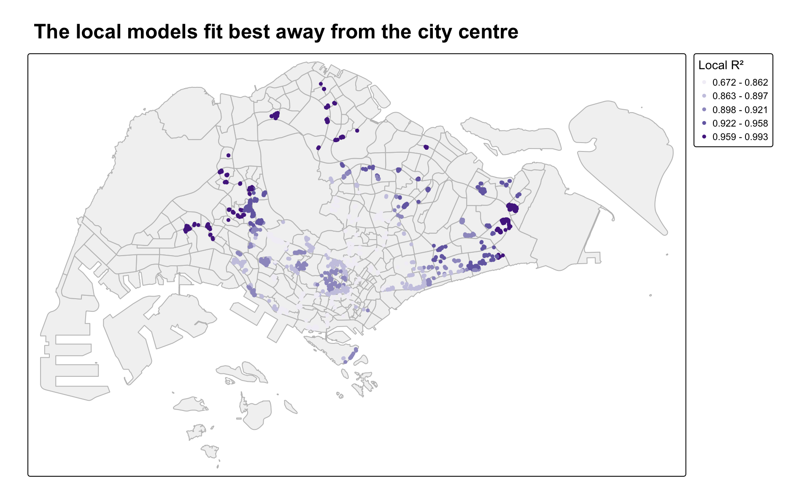
tm_shape(mpsz_svy21) +
tm_polygons(fill = "grey95", col = "grey75") +
tm_shape(condo_resale.sf.adaptive) +
tm_dots(fill = "Local_R2",
size = 0.25,
fill.scale = tm_scale_intervals(style = "quantile",
values = "brewer.purples"),
fill.legend = tm_legend(title = "Local R²",
position = tm_pos_out("right", "center"))) +
tm_title("The local models fit best away from the city centre",
size = 1.5, fontface = "bold")Local R² ranges from 0.67 to 0.99, with a median of 0.91. Even the weakest local model explains about two thirds of the variation. The fit is weakest near the city centre. For condos within 3 km of the CBD the median local R² is 0.87, against 0.96 for those more than 10 km away. Central prices probably depend more on things the 14 variables do not record, such as the view, the floor level or the prestige of the development.
7.6 Visualising the Coefficient Estimates
The book maps the standard error and the t-value of the AREA_SQM coefficient side by side. tmap_arrange() puts the two maps next to each other.
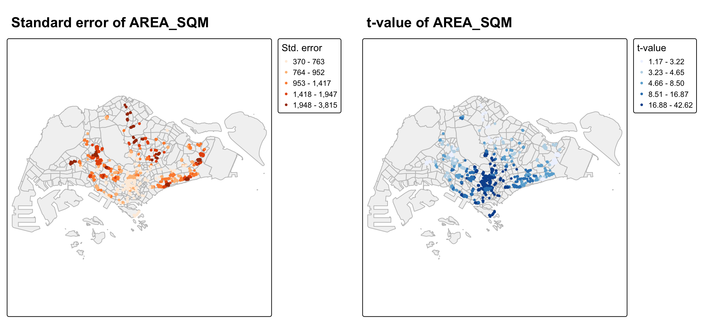
coef_map <- function(var, title, legend_title, palette) {
tm_shape(mpsz_svy21) +
tm_polygons(fill = "grey95", col = "grey75") +
tm_shape(condo_resale.sf.adaptive) +
tm_dots(fill = var,
size = 0.2,
fill.scale = tm_scale_intervals(style = "quantile",
values = palette),
fill.legend = tm_legend(title = legend_title,
position = tm_pos_out("right", "center"))) +
tm_title(title, size = 1.3, fontface = "bold")
}
tmap_arrange(coef_map("AREA_SQM_SE", "Standard error of AREA_SQM",
"Std. error", "brewer.oranges"),
coef_map("AREA_SQM_TV", "t-value of AREA_SQM",
"t-value", "brewer.blues"),
ncol = 2)The t-value is above 1.96 at 1376 of the 1436 condos, so floor area matters almost everywhere. The t-values are highest in the central area and much lower in the north, east and west, where the remaining 60 condos that are not significant all sit, between 10 and 17 km from the CBD. The standard error map is almost the reverse. It is largest in the outer areas.
The reason shows up in the coefficient itself. The local value of an extra square metre ranges from S$3,319 to S$23,064, against a single S$12,778 in the OLS model. Within 3 km of the CBD the median is S$14,092 per square metre, and beyond 10 km it is S$5,499. A square metre costs much more in the centre, so the effect there is large relative to its error. In the suburbs the effect is smaller, and the same amount of noise makes it less certain. This is the kind of local difference a single OLS coefficient hides.
8 Beyond the Exercise
8.1 Log Price Instead of Price
The book makes LOG_SELLING_PRICE in the EDA but then models the raw price. I refit the revised OLS model with the log of price and compare the two on the problems found in the diagnostics.
condo.mlr1.log <- lm(
formula = log(SELLING_PRICE) ~ AREA_SQM + AGE +
PROX_CBD + PROX_CHILDCARE + PROX_MRT +
PROX_ELDERLYCARE + PROX_URA_GROWTH_AREA +
PROX_PARK + PROX_PRIMARY_SCH +
PROX_SHOPPING_MALL + PROX_BUS_STOP +
NO_Of_UNITS + FAMILY_FRIENDLY + FREEHOLD,
data = condo_resale.sf)
set.seed(1234)
log_moran <- global_moran_perm(residuals(condo.mlr1.log),
nb = condo_resale.sf$nb,
wt = condo_resale.sf$wt,
alternative = "greater",
nsim = 499)
skew <- function(x) mean(scale(x)^3)
log_compare <- tibble(
check = c("Adjusted R²", "Shapiro-Wilk W of residuals",
"Skewness of residuals", "Breusch-Pagan statistic",
"Moran's I of residuals", "Variables significant at 0.05"),
price = c(summary(condo.mlr1)$adj.r.squared,
shapiro.test(residuals(condo.mlr1))$statistic,
skew(residuals(condo.mlr1)),
bptest(condo.mlr1)$statistic,
mlr_moran$statistic,
sum(coef(summary(condo.mlr1))[-1, 4] < 0.05)),
log_price = c(summary(condo.mlr1.log)$adj.r.squared,
shapiro.test(residuals(condo.mlr1.log))$statistic,
skew(residuals(condo.mlr1.log)),
bptest(condo.mlr1.log)$statistic,
log_moran$statistic,
sum(coef(summary(condo.mlr1.log))[-1, 4] < 0.05)))
kable(log_compare, digits = 3)| check | price | log_price |
|---|---|---|
| Adjusted R² | 0.647 | 0.786 |
| Shapiro-Wilk W of residuals | 0.686 | 0.972 |
| Skewness of residuals | 5.140 | -0.194 |
| Breusch-Pagan statistic | 162.584 | 234.363 |
| Moran’s I of residuals | 0.144 | 0.200 |
| Variables significant at 0.05 | 14.000 | 10.000 |
TipAlternative explored
The log model fixes most of the normality problem. The residual skewness drops from 5.14 to -0.19 and W rises from 0.686 to 0.972. The fit also improves, with the adjusted R² going from 0.647 to 0.786. This makes sense for prices. Features tend to add a percentage to the price rather than a fixed amount, so an extra square metre is worth more in an expensive area. The log model reads that way. For example, freehold tenure adds about 16 percent to the price.
Two problems remain. The Breusch-Pagan test still finds unequal variance, and the residuals are even more clustered, with Moran’s I at 0.200 against 0.144 for the price model. The log also changes which variables matter. Only 10 of the 14 stay significant. PROX_CHILDCARE, PROX_PRIMARY_SCH, NO_Of_UNITS, FAMILY_FRIENDLY drop out, so their effect in the price model came mostly from the expensive end. So the log model is better behaved, but it still needs a spatial model. The book’s GWR on raw price is a fair choice for teaching, but a log-price GWR would be the next thing I would try.
8.2 Does GWR Remove the Spatial Autocorrelation?
The OLS residuals were clustered, which was the reason to try GWR. I run the same Moran’s I test on the residuals of both GWR models, with the same 1,500 m weights.
moran_res <- function(res) {
set.seed(1234)
global_moran_perm(res,
nb = condo_resale.sf$nb,
wt = condo_resale.sf$wt,
alternative = "greater",
nsim = 499)
}
gwr_fixed_moran <- moran_res(gwr.fixed$SDF$residual)
gwr_adaptive_moran <- moran_res(gwr.adaptive$SDF$residual)
tibble(model = c("OLS", "GWR, fixed bandwidth", "GWR, adaptive bandwidth"),
morans_I = c(mlr_moran$statistic,
gwr_fixed_moran$statistic,
gwr_adaptive_moran$statistic),
p_value = c(mlr_moran$p.value,
gwr_fixed_moran$p.value,
gwr_adaptive_moran$p.value)) %>%
kable(digits = 3)| model | morans_I | p_value |
|---|---|---|
| OLS | 0.144 | 0.002 |
| GWR, fixed bandwidth | -0.020 | 0.996 |
| GWR, adaptive bandwidth | -0.016 | 0.988 |
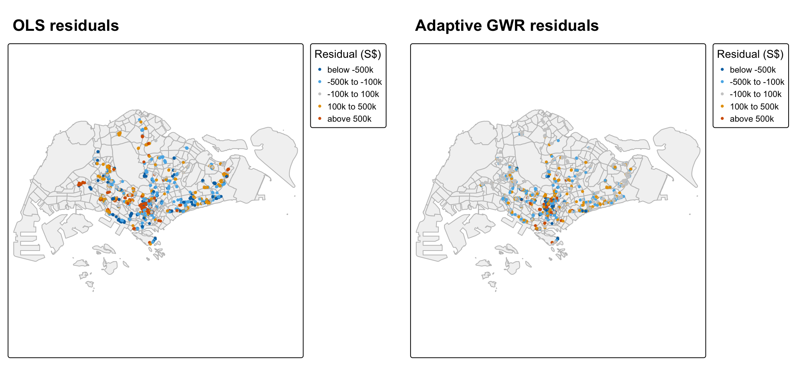
res_map <- function(data, var, title) {
tm_shape(mpsz_svy21) +
tm_polygons(fill = "grey95", col = "grey75") +
tm_shape(data) +
tm_dots(fill = var,
size = 0.2,
fill.scale = tm_scale_intervals(
breaks = c(-Inf, -5e5, -1e5, 1e5, 5e5, Inf),
labels = c("below -500k", "-500k to -100k", "-100k to 100k",
"100k to 500k", "above 500k"),
values = c("#0072B2", "#56B4E9", "grey80", "#E69F00", "#D55E00")),
fill.legend = tm_legend(title = "Residual (S$)",
position = tm_pos_out("right", "center"))) +
tm_title(title, size = 1.3, fontface = "bold")
}
tmap_arrange(res_map(condo_resale.sf, "MLR_RES", "OLS residuals"),
res_map(condo_resale.sf.adaptive, "residual", "Adaptive GWR residuals"),
ncol = 2)
TipAlternative explored
GWR removes the clustering. Moran’s I falls from 0.144 for OLS to -0.016 for the adaptive GWR, with a p-value of 0.988. The fixed model gives -0.02. Both are slightly below zero and nowhere near significant. On the maps I used the same fixed classes for both models so they can be compared. The GWR map has far more grey points within S$100,000 of the actual price, and the large errors no longer come in groups.
The book shows that GWR fits better, but it does not check whether GWR fixed the problem that motivated it. Here it did. The caution is that a model with about 350 effective parameters can absorb almost any spatial pattern, so this result shows the residuals are clean, not that every local coefficient is meaningful. The next section looks at that.
8.3 Which Local Effects Can Be Trusted
A local coefficient is only useful where it is significant. For each variable I count the condos where the local t-value is beyond ±1.96, and where the local coefficient has the same sign as in OLS.
vars <- c("AREA_SQM", "AGE", "PROX_CBD", "PROX_CHILDCARE",
"PROX_ELDERLYCARE", "PROX_URA_GROWTH_AREA", "PROX_MRT",
"PROX_PARK", "PROX_PRIMARY_SCH", "PROX_SHOPPING_MALL",
"PROX_BUS_STOP", "NO_Of_UNITS", "FAMILY_FRIENDLY", "FREEHOLD")
gwr_df <- st_drop_geometry(condo_resale.sf.adaptive)
local_check <- tibble(
variable = vars,
ols_coefficient = coef(condo.mlr1)[vars],
pct_significant = map_dbl(vars, ~ mean(abs(gwr_df[[paste0(.x, "_TV")]]) > 1.96) * 100),
pct_same_sign_as_ols = map_dbl(vars, ~ mean(sign(gwr_df[[.x]]) ==
sign(coef(condo.mlr1)[.x])) * 100)) %>%
arrange(desc(pct_significant))
kable(local_check, digits = c(0, 0, 1, 1))| variable | ols_coefficient | pct_significant | pct_same_sign_as_ols |
|---|---|---|---|
| AREA_SQM | 12778 | 95.8 | 100.0 |
| PROX_CBD | -77131 | 41.2 | 74.5 |
| AGE | -24688 | 37.9 | 95.3 |
| FREEHOLD | 350600 | 35.0 | 81.1 |
| PROX_MRT | -294745 | 28.8 | 81.3 |
| PROX_BUS_STOP | 682482 | 27.2 | 70.2 |
| PROX_PARK | 570505 | 25.8 | 59.6 |
| PROX_ELDERLYCARE | 185576 | 23.7 | 59.1 |
| PROX_URA_GROWTH_AREA | 39163 | 22.4 | 65.6 |
| FAMILY_FRIENDLY | 146308 | 22.0 | 58.6 |
| PROX_PRIMARY_SCH | 159856 | 21.4 | 48.8 |
| PROX_SHOPPING_MALL | -220947 | 16.2 | 53.5 |
| NO_Of_UNITS | -245 | 12.9 | 57.2 |
| PROX_CHILDCARE | -318473 | 12.2 | 48.2 |
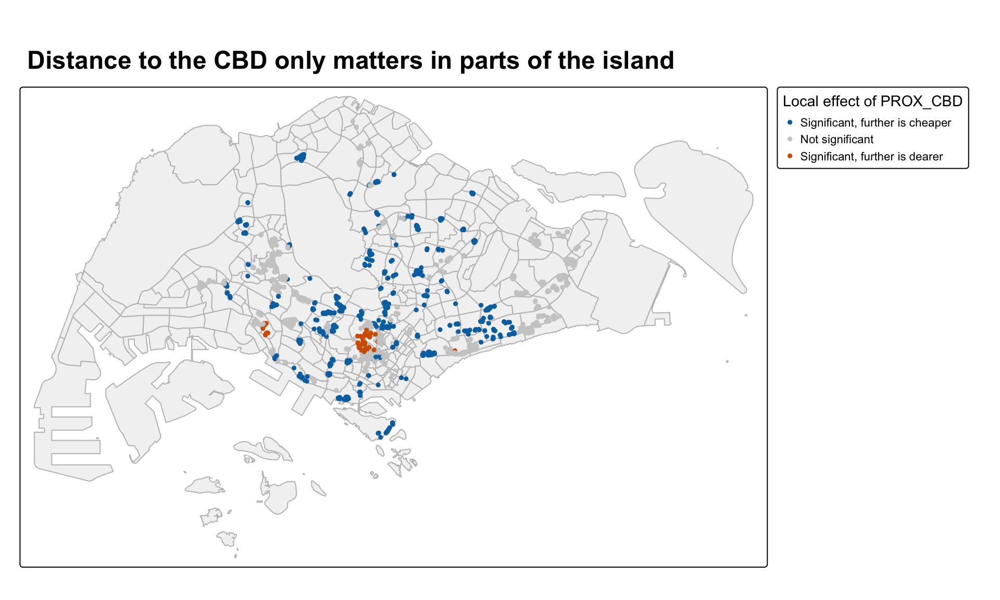
condo_resale.sf.adaptive <- condo_resale.sf.adaptive %>%
mutate(CBD_EFFECT = case_when(
PROX_CBD_TV < -1.96 ~ "Significant, further is cheaper",
PROX_CBD_TV > 1.96 ~ "Significant, further is dearer",
TRUE ~ "Not significant"),
CBD_EFFECT = factor(CBD_EFFECT,
levels = c("Significant, further is cheaper",
"Not significant",
"Significant, further is dearer")))
tm_shape(mpsz_svy21) +
tm_polygons(fill = "grey95", col = "grey75") +
tm_shape(condo_resale.sf.adaptive) +
tm_dots(fill = "CBD_EFFECT",
size = 0.25,
fill.scale = tm_scale_categorical(
values = c("#0072B2", "grey80", "#D55E00")),
fill.legend = tm_legend(title = "Local effect of PROX_CBD",
position = tm_pos_out("right", "center"))) +
tm_title("Distance to the CBD only matters in parts of the island",
size = 1.5, fontface = "bold")
TipAlternative explored
Floor area is the only variable that is significant almost everywhere, at 95.8 percent of condos, and it is positive at every one. Every other variable is significant at less than half of the condos, from 41.2 percent for PROX_CBD down to 12.2 percent for PROX_CHILDCARE. Several also change sign across the island. PROX_CHILDCARE, PROX_PRIMARY_SCH, PROX_SHOPPING_MALL and NO_Of_UNITS have the OLS sign at only about half of the condos.
The map shows this for distance to the CBD. In OLS it is strongly significant and negative. Locally it is significant and negative at 542 condos, significant and positive at 50, and not significant at the other 844. So “further from the CBD is cheaper” holds in some parts of Singapore, not everywhere.
These counts are 1,436 separate tests, so some of the significant ones will be chance. That makes the small percentages even weaker. The safe reading is that floor area has a strong local effect everywhere, a few location variables matter in some areas, and the rest are too noisy to map with 30 neighbours.
9 Limitations
- The data covers one year, 2015. Prices and the value of each feature change with the market, so these coefficients describe 2015.
- The model uses straight-line distances to each facility. Walking distance or travel time would be closer to how buyers see access.
- Several units in the same block share one coordinate. The model treats them as separate observations, which gives large developments more weight in their neighbourhood.
- GWR with 30 neighbours fits about 350 effective parameters to 1,436 sales. It removes the residual clustering, but most local coefficients are not significant, and the local t-tests are not adjusted for being run 1,436 times.
- The model is on raw price, and the residuals are far from normal. The log-price model behaves better but still has clustered residuals, so a log-price GWR would be the next step.
10 Reflections
Here are four things I learned from this exercise.
A global coefficient can hide very different local ones. OLS says an extra square metre adds about S$12,800. GWR says it is about S$14,000 near the CBD and about S$5,500 in the suburbs. Neither number is wrong, but the OLS one describes no actual place.
GWR fixed the problem that motivated it. The OLS residuals were clearly clustered. After GWR, Moran’s I on the residuals was slightly below zero and not significant. I had to run this check myself, since the book only compares fit statistics.
Better fit does not mean every local estimate is real. GWR raised the adjusted R² from about 0.65 to 0.86, but most of its local coefficients were not significant, and several changed sign. Effective parameters and local t-values told me more about reliability than R² did.
Printed output can overstate the evidence. The permutation test printed a p-value below 2.2e-16 when 0.002 was the smallest possible value. Knowing how a test works let me catch that, and the normality claim in the book, which the test itself did not support.